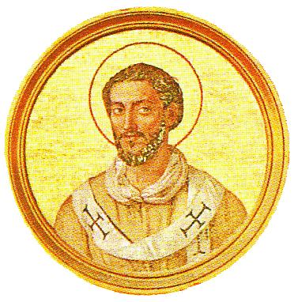

<h3>Predecessor	&#129044; <a href="p027Eutychian.html ">St. Eutychian </a></h3>


<br>
<h1 style="color:red;">St. Caius </h1>
<br>
<h3>Successor &#129046; <a href="p029Marcellinus.html">St. Marcellinus </a></h3>

<h3>

   St. Caius (283-296). Nothing is known of his pontificate.

</h3>


<br>
<h5>
McSorley, Joseph.<i> An Outline History of the Church by Centuries (from St. Peter to Pius XII)</i>. 2nd Ed. 1944.
</h5>